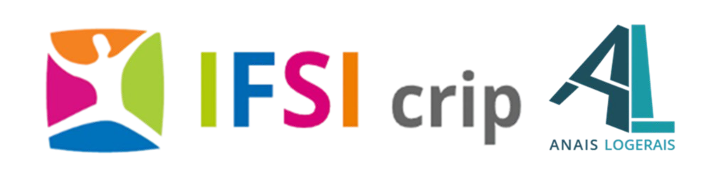

🔬 Sciences Biologiques et Médicales
Cartes mentales, infographies, ressources diverses
🔻 🫀 2.2 - Systèmes et grandes fonctions - L'essentiel
- UE2.2 🫀Système Circulatoire
- UE2.2 🫀Système Circulatoire bis
- UE2.2 🫀My Système Circulatoire 👩🎨
- UE2.2 🫁 Système Respiratoire
- UE 2.2 🧠Système Neurologique
- UE2.2 🛂Système Rénal et urinaire
- UE2.2 🟡 Système Urologique
- UE2.2 🦷 Système Digestif
- UE2.2 👩🎨 Système Digestif
- UE2.2 🦴 Système Locomoteur
- UE2.2🐣 Système Reproducteur
- UE2.2 🦻🖐️👁️ Système des Sens
- UE2.2 🩸 Système Sanguin
- UE2.2 🩸 Système Sanguin Bis
- UE2.2🩸 Hémostase
- UE2.2 🦋 Système Endocrinien
- UE2.1 🍬 Régulation de la Glycémie
- UE2.2 🧪 Examens : Gaz Du Sang
- UE2.2 🎨 Schémas Anatomie Physiologie
- UE2.2 🖼️ Tableau récap' Anatomie Physiologie
🔻 2.4 - Processus traumatiques
- UE2.4 💥 PEC de la Douleur
- UE2.4 Plaies aigües
- UE2.4 Escarres
- UE2.4 PEC des Plaies
- UE2.4 🏥 Reco Pansements HAS
- UE2.4 🧑🦽 Polytraumastisme
- UE2.4 🧑🦽 Polytraumastisme Bis
- UE2.4🧠 Traumatisme Crânien
- UE2.4🧠 Traumatisme Crânien Bis
- UE2.4 🫁 Traumatisme thoracique
- UE2.4 🫁 Traumatisme thoracique Bis
- UE2.4 🔪 Traumatisme Abdomino-Pelvien
- UE2.4 🔪 Traumatisme Abdomino-Pelvien Bis
- UE2.4 🦴 Traumatisme Locomoteur
- UE2.4 🦴 Traumatisme Locomoteur Bis
- UE2.4 🦴 Traumatisme Locomoteur Ter
- UE2.4 😱 Traumatisme Psychique
- UE2.4 😱 Traumatisme Psychique Bis
- UE2.4 🎨 Planches Schémas 🎨
- UE2.4 🥸 Synthèse Anat'Phy'- Révisions 🗣️
- UE2.4 🥸 Méthode - partiel
- UE2.4 🥸 Phrases types - partiel
🔻 🟣 2.6 - Processus Psychopathologiques
- UE2.6 🪞 Psychiatrie Introduction Générale
- UE2.6 🪞 Psychiatrie Introduction Générale 2
- UE2.6 👽 Troubles Psychotiques
- UE2.6 👽 Effets Indésirables des Neuroleptiques
- UE2.6 🦸♀️ Troubles de l'humeur
- UE2.6 🦸♀️Trouble Bipolaire T1 vs T2
- UE2.6 😨Troubles Anxieux
- UE2.6 🍽️ TCA
- UE2.6 🍺 Addictions
- UE2.6 👾 Troubles de la personnalité
- UE2.6 🛒Psychopathologies : classification
- UE2.6 🔐 Contentions et Isolement
- UE2.6 🔐 Contentions Reco HAS
- UE2.6 🔐 Isolement Reco HAS
- UE2.6 🔐 Manifeste Abolition Contention
- UE2.6 🌝 Psychopathologies - Révisions 🗣️
- UE2.6 🎨 Planches Schémas 🎨
🔻 💊 2.11 - Pharmacologie et thérapeutique
- UE2.11 💊 Généralités et définition en pharmacologie
- UE2.11 💊 Pharmacocinétique et pharmacodynamie
- UE2.11 👩🎨 Pharmacologie
- UE2.11 💊 Formes pharmaceutiques
- UE2.11 💊 Risques et dangers du médicament
- UE2.11 💊 Statut du médicament
- UE2.11 💊 Classe des Médicaments
- UE2.11 💊 Classe des Médicaments - Révisions 🗣️
- UE2.11 🌈 Les Antalgiques
- UE2.11 🌈 Surveillance antalgiques - CheckList
- UE2.11 🌟 Les Anti-Inflammatoires
- UE2.11 🌟 Les Anti-Inflammatoires - Tableau
- UE2.11 🌟 Les Anti-Inflammatoires - CheckList